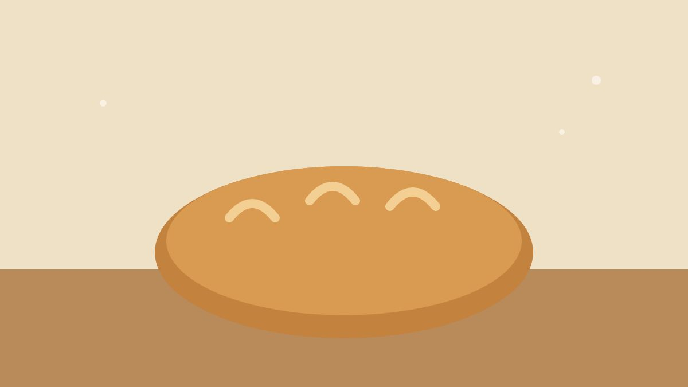

Why Bread Rises

Flour and water make a paste. Add yeast and wait, and the paste turns into something alive: it swells, it smells of beer and fruit, and when it bakes it holds its shape around a thousand small bubbles.
The yeast eats sugars in the flour and breathes out carbon dioxide. On its own the gas would simply escape. What keeps it in is gluten, a stretchy web of proteins that forms when flour meets water and is worked.
Time is an ingredient
A slow rise in a cool kitchen gives the yeast and the bacteria that travel with it time to make flavour. A fast, warm rise makes bread that is light but plain. Most bakers settle on something in between, and the best ones learn to read the dough rather than the clock.